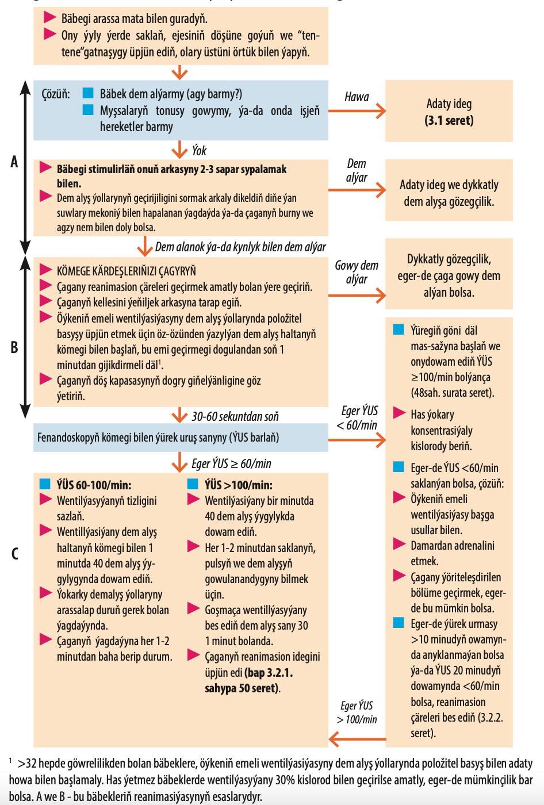

Bäbekleriň reanimasiýasy: hereketleriň algoritmi

Bäbegi şarpyldadyp urmaklygyň geregi ýok, iki ýa-da üç sapar arkasyny sypalamak, şeýlede mata bilen süpürmeklik hem ýeterlik stimulýasyýadyr.
A. Dem alyş ýollary
 Kellesini biraz arkasyna tarap egip saklaň, dem alyş ýollarynyň geçirijiligini üpjün etmek üçin.
Kellesini biraz arkasyna tarap egip saklaň, dem alyş ýollarynyň geçirijiligini üpjün etmek üçin.-
Dem alyş ýollaryny sorduryp arassalamagyň geregi ýok. Arassalamagy eger-de düwünçegiň ýanyndaky suwuklykda mekoniý bar bolsa we bäbek agalamasa we hereketsiz bolsa geçirmeli. Eger-de ýan suwy arassa bolsa, arassalamagy bäbegiň agzy we burny nemden doly bolsa
geçiriň.
-
 Agyz boşlugyny, burnuny we bogazyň agyz bölegini soryjy bilen sordyryň, sorujyny bogaza
çuň salmaň, sebäbi munuň özi hem apnoýe ýa-da bradikardiýa bermekligi mümkin.
Agyz boşlugyny, burnuny we bogazyň agyz bölegini soryjy bilen sordyryň, sorujyny bogaza
çuň salmaň, sebäbi munuň özi hem apnoýe ýa-da bradikardiýa bermekligi mümkin.
-
B. Dem alyş
- Maska saýlanyňyzda bäbegiň burnuny we agzyny ýapar ýalysyny saýlaň (aşak seret): 1-lik bäbegiň agramy kada bolsa, 0 eger-de bäbegiň agramy 2,5 kg pes bolsa.
- Dem alyş halta we maskanyň kömegi bilen wentillýasiýa 40-60 dem alyş bir minutda geçiriň.
-
 Döş kapasasynyň dem alyş haltasyny her sapar basanyňda giňelýänligine göz ýetiriň; eger bäbek has kiçi bolsa döş kapasasynyň çenden aşa giňelmekligine ýol bermäň (pnewmotoraks
döreme howpy ýokary).
Döş kapasasynyň dem alyş haltasyny her sapar basanyňda giňelýänligine göz ýetiriň; eger bäbek has kiçi bolsa döş kapasasynyň çenden aşa giňelmekligine ýol bermäň (pnewmotoraks
döreme howpy ýokary).
C. Gan aýlanyşyk
- Ýüregiň göni däl owkalamasyny başlaň, eger-de ÝUS <60/min bolsa wentilýasiýadan soň öýkeniň gowy dolmagynda 30-60 sekunt: Doş kapasasyna 90 sapar basyň (kompressiýa) her bir 30 emeli dem alyşa 1 minutda (3 Basyş 1 dem alyş hereketine her 2 sekuntdan).
- Başam barmaklaryňyzy döşüň aşaky böleginde ýerleşdiriň (aşak seret).
- Döş kapasasynyň diametriniň 1/3 çuňlygynda basyň.